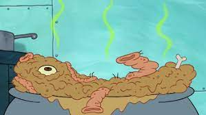

Plankton's Chum (FAKE RECIPE):

Ingredients:
- 1 cup of green slime (you can use green gelatin or green pudding for a safe option)
- 1/2 cup of crushed rocks (use crushed chocolate cookies for a tasty alternative)
- A handful of rubber bands (for decoration only)
- A pinch of despair (not really, just a pinch of cocoa powder for color)
- Plastic eyeballs (available at craft stores, not edible)
Instructions:
- Begin by preparing the green slime or green gelatin according to the package instructions. If you're making a dessert version, green pudding works well too.
- In a separate bowl, crush the chocolate cookies until they resemble coarse sand. This will represent the crushed rocks in Plankton's Chum.
- Once the green slime or gelatin has set, it's time to assemble your Chum. In a shallow dish or bowl, spread a layer of the green slime.
- Sprinkle the crushed chocolate cookies (representing crushed rocks) over the green slime.
- Carefully place a few rubber bands on top of the mixture for that authentic Plankton's Chum look. Remember, these are for decoration and not for eating.
- Sprinkle a pinch of cocoa powder (representing despair) over the top for added color and texture.
- For the finishing touch, place plastic eyeballs on top to make it look even more like Plankton's creation. Again, these are not edible and are purely for decoration.
- Serve your Plankton's Chum at a SpongeBob-themed party or as a fun gag dessert for fans of the show.
Please note that this recipe is meant purely for fun and entertainment and is not intended for actual consumption. Enjoy the humor of the SpongeBob SquarePants series without actually eating Plankton's Chum!